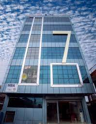

ISMT College is one of the leading educational institutions in Nepal, delivering internationally recognized programs. This page demonstrates the use of basic HTML elements for assignment purposes.
ISMT College, established with the vision of providing quality education in Nepal, is affiliated with the University of Sunderland, UK. Through this affiliation, students in Nepal can earn a globally recognized degree while studying at ISMT.
The college focuses on providing practical and career-oriented education. It emphasizes modern teaching methods, well-equipped labs, and industry-based learning. The mission of ISMT is to prepare graduates who can compete in the global market.
Vision: To be a center of academic excellence, producing graduates who are globally competitive and socially responsible.
Mission: To provide quality education through innovative teaching, modern facilities, and strong industry partnerships.
The following table displays sample academic programs with their duration and level:
| Program | Duration | Level |
|---|---|---|
| BSc (Hons) Computing | 3 Years | Undergraduate |
| BBA | 3 Years | Undergraduate |
| MSc Computing | 1 Year | Postgraduate |
ISMT College has multiple campuses across Nepal:
| City | Campus Name |
|---|---|
| Kathmandu | ISMT College Kathmandu Campus |
| Pokhara | ISMT College Pokhara Campus |
| Butwal | ISMT College Butwal Campus |
Below is an example of an image tag. Replace ismt_butwal.jpeg with an actual image file:
The iframe below embeds a YouTube video about Computer Science:
Life at ISMT College is vibrant and dynamic. Students can join various clubs such as:
These activities help students build leadership skills, teamwork, and confidence beyond academics.
ISMT College provides a learning environment that encourages critical thinking, innovation, and collaboration. Students are motivated to participate in workshops, seminars, and research-based projects. This approach not only enhances academic knowledge but also builds leadership and problem-solving skills.
Being affiliated with an international university, ISMT College also ensures that its curriculum remains up-to-date with global trends in computing, information technology, and business management. Students benefit from both academic excellence and practical exposure.